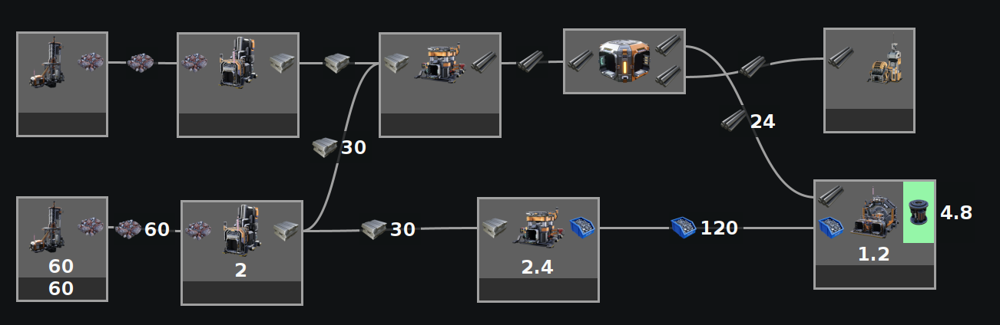

A blank value means there is nothing limiting that machine and it could be any number. (Unless you are using the None calculator, in which case they are always blank).
A ? value means it is either still calculating, the calculation was canceled, or when in manual mode, there was not enough info entered to calculate it.
